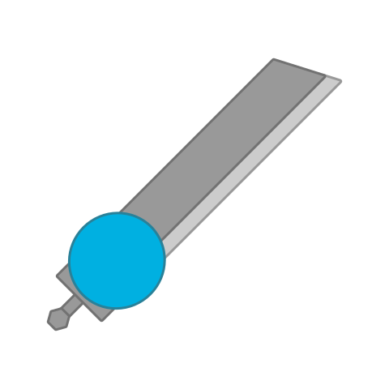

This page has redlinks (links that lead nowhere). This is inentional because I'll deal with Rodrigonian Laboratory Mode when the time comes.
The Cleaver is a stronger version of Revenge's Sword.
It has a team-colored circular body with a gray on the back and a massive gray blade with a light gray tip.
It is a big Sword with large 180º arcs that take 5 seconds to finish. Deals massive damge to tanks.
It increases the drop chance of tank parts relative to other tanks.
Revenge, for their Sword tank.

Tier 5 Tank
Upgrades from Sword
Weapons:
Inherits base body stats from Basic
A heavier Sword with inbuilt Looting.